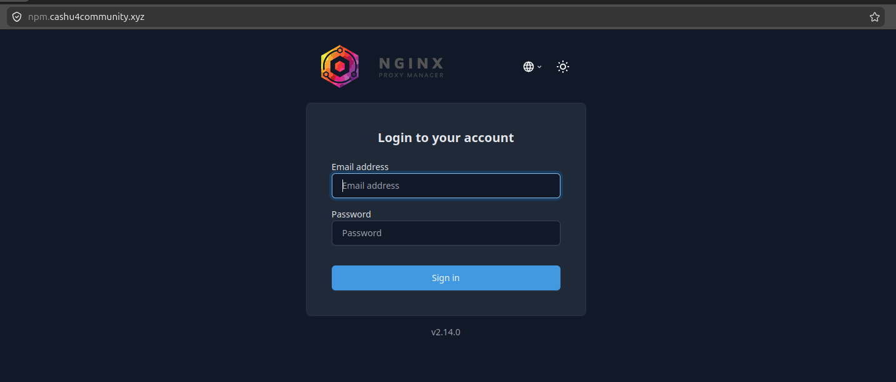
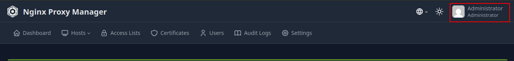

Configuración de acceso con Nginx Proxy Manager
En esta etapa vas a configurar el acceso externo a tus servicios (Lightning Terminal, LNBits, Cashu, Orchard, etc.) usando Nginx Proxy Manager, que actúa como proxy inverso y gestor de certificados SSL.
Acceso inicial
El contenedor ya viene preconfigurado, por lo que no necesitas crear un usuario:
- Usuario:
changeme@domin.com - Contraseña:
ch4ng3me*-
Accede desde tu navegador a la URL o IP donde esté corriendo el contenedor, para nuestro ejemplo usaremos http://npm.cashu4community.xyz:81. Como accedemos por primera vez, lo hacemos usando el puerto 81 y mediante una conexión insegura. En el siguiente paso corregiremos esto.

Crear un Proxy Host
Para crear un Proxy Host seleccionamos en el Dashboard la sección Proxy Host como se muestra en la siguiente imagen:

Luego hacemos clic en el botón Add Proxy Host

Nos aparecerá una ventana donde introduciremos los datos del servicio.

- Domain Names este será el nombre dominio que tendrá la aplicación de cara a internet. Como para este ejemplo estamos configurando el acceso al NPM usaremos el dominio
npm.cashu4community.xyz. - Scheme el esquema es la via por la cual NPM se comunica con la aplicacion que está corriendo en el contenedor puede ser
httpohttps. Para NPM lo dejamos enhttp. - Forward Hostname / IP no es mas que el nombre del host interno como se trata de un contenedor de docker lo mejor será usar el nombre del servicio. Para NPM será
npm. - Forward Port es el puerto por el que corre la aplicación internamente en el contenedor de Docker. NPM usa el puerto 81.
- Options Habilitamos todas las opciones para mejorar la seguridad y funcionalidad de la aplicación.
Pasamos a la pestaña SSL para generar el certificado y habilitar las opciones de seguridad.

- SSL Certificate Seleccionamos en la lista
Request new Certificate - Habilitamos
Force SSl,HTTP/2 SupportyHSTS Enabled
Al hacer clic en el botón Save se configura el proxy host y nos aparecerá mostrando el indicador Online en verde, en caso contrario significa que se ha introducido algum dato erroneo o la aplicación no está corriendo.

Ya configuramos el Proxy Host para el servicio NPM por lo que ya podemos conectarnos a https://npm.cashu4community.xyz sin usar el puerto 81.

Eliminamos el acceso de NPM por el puerto 81
Ya hemos configurado el Proxy Host para el servicio NPM y ya podemos acceder mediante https usando el puerto 443. Ahora deshabilitaremos el acceso por el puerto 81. Para ello editamos el archivo docker-compose.yml en la raíz del proyecto.
Buscamos el servicio npm y en la sección ports: eliminamos el puerto 81.
ports:
- '80:80'
- '443:443'
- '81:81' Quedando así:
ports:
- '80:80'
- '443:443' Para hacer efectivo el cambio solo necesitamos regenerar el contenedor de NPM.
Ejecutamos lo siguiente:
docker-compose up --force-recreate npm -dSi no hubo errores en la edición del archivo yml el proceso debe terminar correctamente. Así que ya podremos acceder al panel de administración de NPM mediante https unicamente.

Cómo encaja esto en tu infraestructura
Hasta aquí hemos configurado un registro Proxy Host y el acceso al NPM de forma segura, ahora podemos configurar el resto de los servicios ya que cada uno tendrá su propio Proxy Host en la siguiente tabla se muestran los datos necesarios:
| Dominio | Esquema | Reenvío de dominio / IP | Puerto interno |
|---|---|---|---|
| npm.cashu4community.xyz | http | npm | 81 |
| lit.cashu4community.xyz | https | lit | 8443 |
| lnbits.cashu4community.xyz | http | lnbits | 5000 |
| mint.cashu4community.xyz | http | cashu | 3336 |
| orchard.cashu4community.xyz | http | orchard | 3326 |